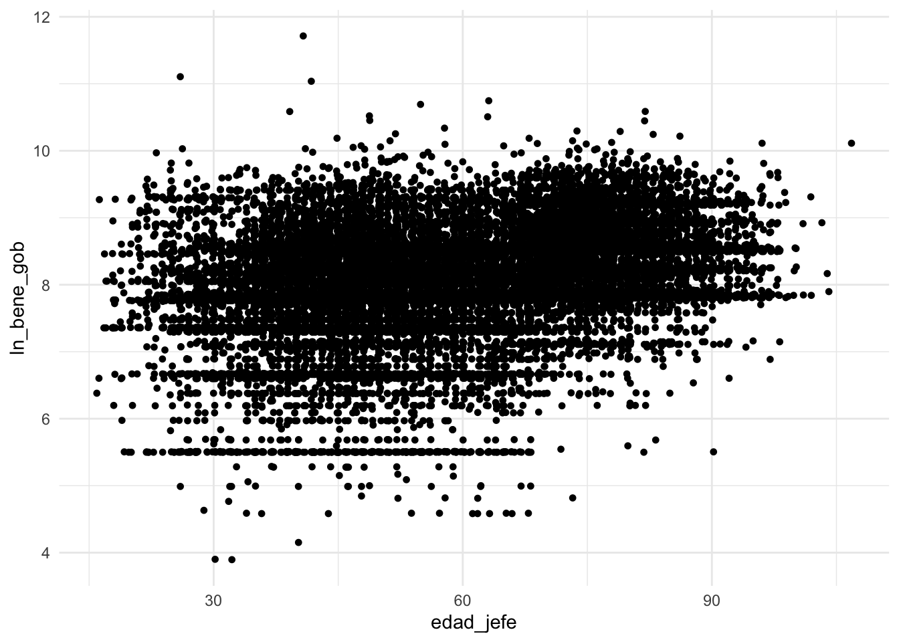

if(!require("pacman")) install.packages("pacman")Loading required package: pacmanpacman::p_load(tidyverse, readxl, writexl, haven, sjlabelled, foreign, janitor, esquisse, RColorBrewer, wesanderson)Cargaremos nuestros paquetes para hoy.
if(!require("pacman")) install.packages("pacman")Loading required package: pacmanpacman::p_load(tidyverse, readxl, writexl, haven, sjlabelled, foreign, janitor, esquisse, RColorBrewer, wesanderson)Y cargaremos las bases de datos.
concentrado2020 <- haven::read_dta("datos/concentrado2020.dta")Esta semana veremos gráficos con dos o tres variables.
No queremos nuestros datos con notación científica.
options(scipen=999)
#Fuente: https://www.iteramos.com/pregunta/41897/como-desactivar-la-notacion-cientifica-en-rEmpezaremos relacionando dos variables cuantitativas.
Los diagramas de dispersión utilizan el eje horizontal x y el eje vertical y, para mostrar los valores de dos variables cuantitativas. Los datos se muestran como un conjunto de puntos donde vamos a tener las posiciones (x,y)
Para obtener nuestro gráfico, utilizaremos la geometría: geom_point()
concentrado2020 %>%
ggplot(aes(edad_jefe, bene_gob)) +
geom_point()+
theme_minimal()Dentro de la opción geom_point, podemos modificar el tamaño, color y forma de nuestros puntos.
concentrado2020 %>%
ggplot(aes(edad_jefe, bene_gob)) +
geom_point(shape = 20, colour = "black", size = 2)+
theme_minimal() #también se puede "fill" y "stroke"Vemos que nuestra distribución de beneficios gubernamentales tiene un sesgo positivo. Es decir, muy pocas unidades reciben un monto de beneficios mucho más alto. ¿Será que la edad sí tiene relación con el monto que recibes como beneficios gubernamentales?
Veamos los datos atípicos de beneficios gubernamentales de manera gráfica.
concentrado2020 %>%
ggplot(aes(x=bene_gob)) +
geom_boxplot()+
theme_minimal()summary(concentrado2020$bene_gob) Min. 1st Qu. Median Mean 3rd Qu. Max.
0 0 0 1271 1574 122283 concentrado2020 %>%
select(bene_gob) %>%
arrange(bene_gob) %>%
tail()# A tibble: 6 × 1
bene_gob
<dbl>
1 39620.
2 44022.
3 46478.
4 62164.
5 66560.
6 122283.Convertiremos nuestra variable bene_gob. Calcularemos el logaritmo natural.
concentrado2020$ln_bene_gob<-log(concentrado2020$bene_gob)concentrado2020 %>%
filter(ln_bene_gob>0) %>% #agregamos un filtro para incluir los datos donde el logaritmo es mayor a 0
ggplot(aes(edad_jefe, ln_bene_gob)) +
geom_point(shape = 20, colour = "black", size = 2)+
theme_minimal()Podemos agregar la tendencia de los datos con geom_smooth.
concentrado2020 %>%
filter(ln_bene_gob>0) %>%
ggplot(aes(edad_jefe, ln_bene_gob)) +
geom_point(shape = 20, colour = "black", size = 2)+
geom_smooth()+
theme_minimal()`geom_smooth()` using method = 'gam' and formula 'y ~ s(x, bs = "cs")'Además le podemos especificar el método. Geom_smooth también tiene diversas opciones.
concentrado2020 %>%
filter(ln_bene_gob>0) %>%
ggplot(aes(edad_jefe, ln_bene_gob)) +
geom_point(shape = 20, colour = "black", size = 2)+
geom_smooth(method = "lm", se = FALSE) + #linear method y no incluir error est.
theme_minimal()`geom_smooth()` using formula 'y ~ x'Ahora a lo mejor se ve un poquito más clara la relación.
Podemos también variar la geometría: en lugar de geom_point, podemos usar geom_jitter().
concentrado2020 %>%
filter(ln_bene_gob>0) %>%
ggplot(aes(edad_jefe, ln_bene_gob)) +
geom_jitter(width = 0.25, shape = 20, colour = "black", size = 2) +
theme_minimal()
Podemos colorear las observaciones con base en una variable
concentrado2020 %>%
filter(ln_bene_gob>0) %>%
ggplot(aes(x= edad_jefe, y= ln_bene_gob, color=edad_jefe)) +
geom_point(shape = 20, size = 2)+
geom_smooth(method = "lm", se = FALSE)`geom_smooth()` using formula 'y ~ x' theme_minimalfunction (base_size = 11, base_family = "", base_line_size = base_size/22,
base_rect_size = base_size/22)
{
theme_bw(base_size = base_size, base_family = base_family,
base_line_size = base_line_size, base_rect_size = base_rect_size) %+replace%
theme(axis.ticks = element_blank(), legend.background = element_blank(),
legend.key = element_blank(), panel.background = element_blank(),
panel.border = element_blank(), strip.background = element_blank(),
plot.background = element_blank(), complete = TRUE)
}
<bytecode: 0x7fb2029d6550>
<environment: namespace:ggplot2>O bien, podemos cambiar la transparencia.
concentrado2020 %>%
filter(ln_bene_gob>0) %>%
ggplot(aes(x= edad_jefe, y= ln_bene_gob, alpha=edad_jefe)) +
geom_point(colour=2, shape = 20, size = 2)+
geom_smooth(method = "lm", se = FALSE)+
theme_minimal()`geom_smooth()` using formula 'y ~ x'Ahora sí, podemos enchular nuestro gráfico
concentrado2020 %>%
filter(ln_bene_gob>0) %>%
ggplot(aes(x= edad_jefe, y= ln_bene_gob, alpha=edad_jefe)) +
geom_point(colour=2, shape = 20, size = 2)+
geom_smooth(method = "lm", se = FALSE, color="grey", size=0.1)+
labs(
x = "Edad del jefe del hogar",
y = "Ingreso por beneficios del gobierno (en logaritmo)",
title = "Relación entre la edad del jefe del hogar e ingreso proveniente de beneficios del gobierno",
subtitle = "2020",
caption = "Fuente: elaboración propia con datos de ENIGH",
alpha = "Edad"
) +
theme_minimal()+
theme(
plot.title = element_text(color = "black", size = 12, face = "bold", hjust=0.5),
plot.subtitle = element_text(color = "black", size =12, hjust=0.5),
plot.caption = element_text(face = "italic", size = 8, hjust=0.5)
)`geom_smooth()` using formula 'y ~ x'Intentemos hacer el gráfico sin el logaritmo, pero filtrando nuestros datos
concentrado2020 %>%
filter(bene_gob>0 & bene_gob<=35000) %>%
ggplot(aes(x = edad_jefe, y = bene_gob, alpha=bene_gob)) +
geom_point(
shape = "circle small",
size = 1.65,
colour = "#010901"
) +
geom_smooth()+
labs(
x = "Edad del jefe del hogar",
y = "Ingresos por beneficios del gobierno",
title = "Relación entre la edad del jefe del hogar e ingreso proveniente de beneficios del gobierno",
subtitle = "2020",
caption = "Fuente: elaboración propia con datos de ENIGH",
alpha = "Beneficios"
) +
theme_minimal()`geom_smooth()` using method = 'gam' and formula 'y ~ s(x, bs = "cs")'También podemos graficar la relación entre dos variables cualitativas.
Vamos a etiquetar nuestras variables y a convertir el estrato socioeconómico en factor.
etiqueta_sex<-c("Hombre", "Mujer")
concentrado2020<-concentrado2020 %>%
mutate(sexo_jefe=as_numeric(sexo_jefe)) %>% # para quitar el "string"
sjlabelled::set_labels(sexo_jefe, labels=etiqueta_sex)
concentrado2020 <- concentrado2020 %>%
mutate(estrato=case_when(est_socio==1~"Bajo",
est_socio==2~"Medio Bajo",
est_socio==3~"Medio Alto",
est_socio==4~"Alto"),
estrato = factor(estrato,
levels=c("Alto", "Medio Alto", "Medio Bajo", "Bajo")))
table(concentrado2020$estrato)
Alto Medio Alto Medio Bajo Bajo
5778 15466 47018 20744 Ahora vamos a hacer nuestros gráficos de barras. Una opción es hacer las gráficas apiladas.
concentrado2020 %>%
ggplot(aes(x=as_label(sexo_jefe), fill = estrato))+
geom_bar() +
scale_fill_hue(direction = 1) + #esta especifica la dirección de los colores
theme_minimal()Pero, no queremos las frecuencias absolutas, sino los porcentajes.
Podemos agregar unas líneas de código.
concentrado2020 %>%
group_by(sexo_jefe) %>% #agrupa por sexo
count(estrato) %>% #calcula el n de cada estrato por sexo
mutate(pct = prop.table(n)) %>% #calcula la proporción
ggplot(aes(x = as_label(sexo_jefe), y = pct, fill = estrato)) +
geom_col() +
scale_y_continuous(labels = scales::percent) +
scale_fill_hue(direction = 1) +
theme_minimal()Otra forma es colocar las barras a la par, en lugar de apilarlas. El geom_col, tiene diversas opciones
concentrado2020 %>%
group_by(sexo_jefe) %>% #agrupa por sexo
count(estrato) %>% #calcula el n de cada estrato por sexo
mutate(pct = prop.table(n)) %>% #calcula la proporción
ggplot(aes(x = as_label(sexo_jefe), y = pct, fill = estrato)) +
geom_col(position="dodge") +
scale_y_continuous(labels = scales::percent) +
scale_fill_hue(direction = 1) +
theme_minimal()Sin embargo, ahí vemos que tenemos que ajustar los niveles.
concentrado2020 <- concentrado2020 %>%
mutate(estrato=case_when(est_socio==1~"Bajo",
est_socio==2~"Medio Bajo",
est_socio==3~"Medio Alto",
est_socio==4~"Alto"),
estrato = factor(estrato,
levels=c("Bajo", "Medio Bajo", "Medio Alto", "Alto")))
concentrado2020 %>%
group_by(sexo_jefe) %>% #agrupa por sexo
count(estrato) %>% #calcula el n de cada estrato por sexo
mutate(pct = prop.table(n)) %>% #calcula la proporción
ggplot(aes(x = as_label(sexo_jefe), y = pct, fill = estrato)) +
geom_col(position="dodge") +
scale_y_continuous(labels = scales::percent) +
scale_fill_hue(direction = 1) +
theme_minimal()Podemos también hacer pequeñas gráficas de forma separada.
concentrado2020 %>%
group_by(sexo_jefe) %>%
count(estrato) %>%
mutate(pct = prop.table(n)) %>%
ggplot(aes(x = as_label(sexo_jefe) , y = pct, fill = as.factor(sexo_jefe))) +
geom_col() +
scale_fill_brewer(palette = "Set2", direction = -1) +
theme_minimal() +
scale_y_continuous(labels = scales::percent) +
facet_wrap(vars(estrato)) +
theme_minimal()Vamos a escoger el gráfico “position dodge” y agregarle los títulos y etiquetas y colorcito.
concentrado2020 %>%
group_by(sexo_jefe) %>% #agrupa por sexo
count(estrato) %>% #calcula el n de cada estrato por sexo
mutate(pct = prop.table(n)*100) %>% #calcula el porcentaje
mutate_if(is.numeric, round, digits = 0) %>% #redondea a 0
ggplot(aes(x = as_label(sexo_jefe), y = pct, fill = estrato)) +
geom_col(position="dodge") +
scale_fill_brewer(palette = "BuPu")+
geom_text(aes(sexo_jefe, label=paste0(pct, "%")),
position = position_dodge(width = .9),
vjust = -0.5,
size = 3,
colour = "black") +
labs(
x = "Jefatura del hogar",
y = "Porcentaje",
title = "Estrato socioeconómico, según el sexo del jefe del hogar en México 2020",
caption = "Fuente: elaboración propia con base en ENIGH 2020",
fill = "Estrato socioeconómico"
) +
theme_minimal() +
theme(
plot.title = element_text(color = "black", size = 12, face = "bold", hjust=0.5),
plot.caption = element_text(face = "italic", size = 8, hjust=0.5)
)`mutate_if()` ignored the following grouping variables:
• Column `sexo_jefe`